A group animation about a knight who must avenge his wife. Made in Maya for IAT343.
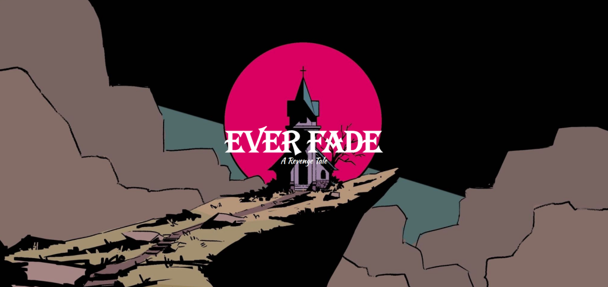
Everfade was a group project animation consisting of 5 group members for IAT343 which was an animation course where we used Maya, considered the industry standard 3d program. The storyline revolves around a knight that must avenge his wife who was murdered by an evil religious leader. So the knight travels to the church where he resides and they fight to the death.
The main issue encountered was time constraints due to the amount of work that needed to be done. Since this was a full course, students were also expected to do individual graded assignments alongside our final animation project and other course work. This led to us needing to cut out some story scenes and so my group and I were not able to fully flesh out the story as much as we had hoped and pacing feels a little rushed.
Despite that, I am still very proud of the final product that was created and felt very accomplished with how much I was able to contribute to the whole production. Below is the behind the scenes of that achievement.
In this project I helped with storyboarding, sketches, 3d modeling, rigging, UV mapping, animating, and rendering. Due to the scale of this project and how effective our group worked as a team, most of the roles I helped with weren't solely just me doing the work. For example, for the 3d modeling each member was 3d modeling different objects or characters for the project. Each stage below shows specifically what I did, from the initial ideation to the final rendering.
J. Todd Anderson
A significant influence on my approach to visual storytelling is the storyboarding work of J. Todd Anderson, specifically his quick yet expressive sketches for movies and intense sequences, such as those in No Country for Old Men. Anderson's technique, often appearing as "a little messy" at first glance, is actually very inspiring in its clarity and communication. He prioritizes essential information like blocking, character expression, and lighting rather than immense detail, which influences how I approach narrative structure and translating ideas into images.
I no longer feel compelled to over draw every frame. Instead, I follow his model by focusing on the important and essential structures of a scene, ensuring my own storyboards possess the clarity and information needed for production efficiency, whether in 3d visualization or complex animation sequences. By studying his expressive and intentional lines, I have learned to build narratives that allow the initial creative energy to transition effectively into the final 3D environment.
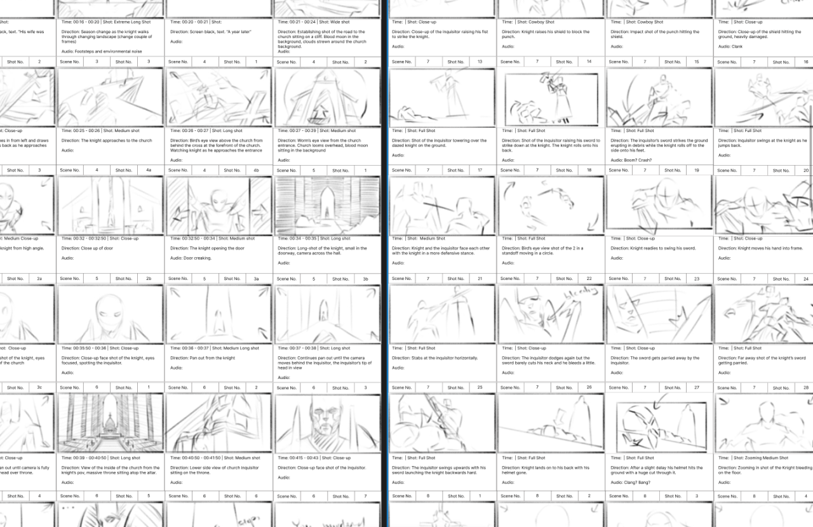
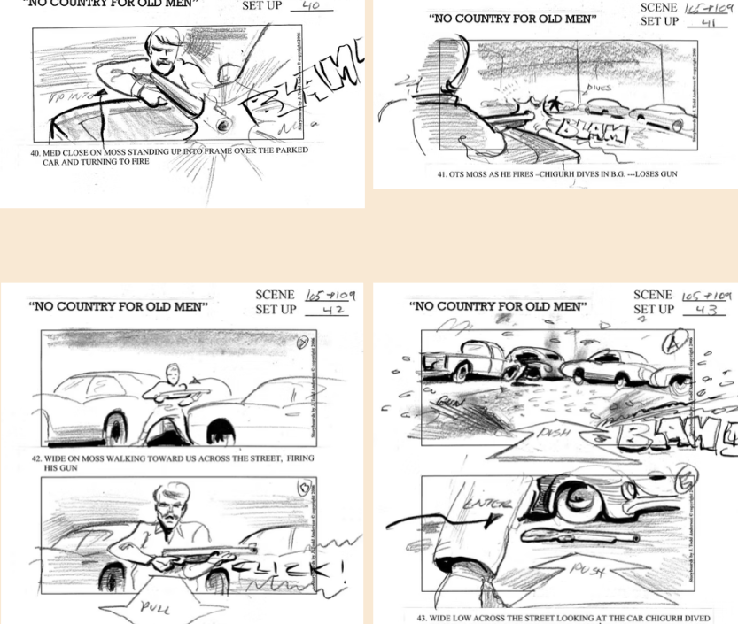
Stage 1
For storyboarding, my main goal was to draw out each scene so that it can be explained in 1 sentence, shown in Figure 4, which helped keep intentionality in how I sketched so that I could convey as much information as possible in one frame without overcomplicating or crowding the shot.
I also had to make sure they flowed into one another without losing any context just like keyframes. This could be seen like panels in a comic or manga.
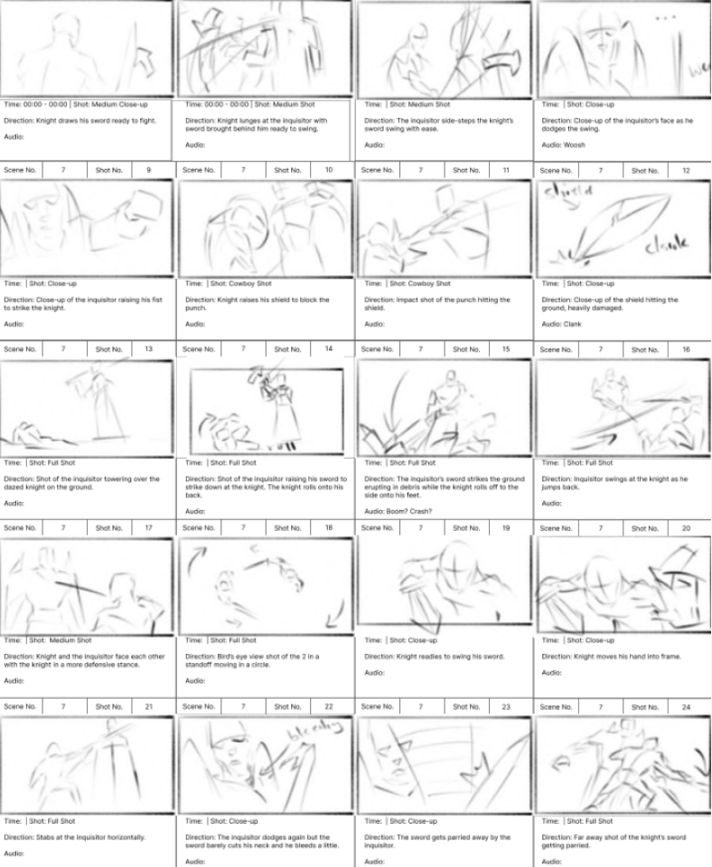
Stage 2
This stage involved creating character designs and props for the animation after the scenes for the storyline were finalized. I was in charge of mainly the ideation of props like chairs, benches, the throne, as well as the wife character.
As can be seen in the top left of Figure 5, these were my initial sketches I pitched to the group and the enlarged one on the right was the finalized one after a core art style was decided on.
Unfortunately due to time constraints as mentioned before, a lot of the wife's scenes were cut and so the design of her did not make it to the final 3d rendering to save time.
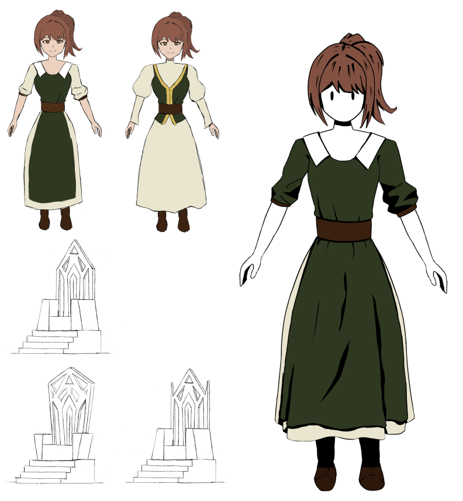
Stage 3
I was in charge of 3d modeling props for the scenes such can be seen in Figures 6 and 7 where I 3d modeled the throne and benches that would go into the church.
Due to these being geometric shapes and not characters they were relatively easy for the main body but once it got to the finer details and indents or holes it took more thought and precision.
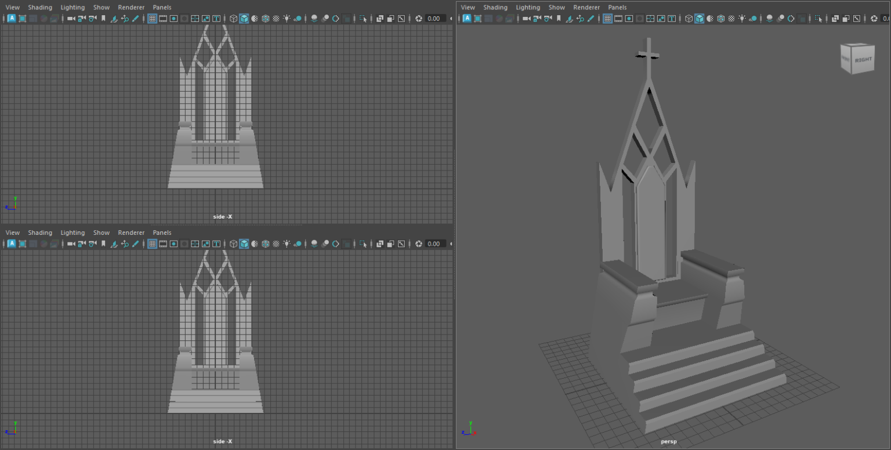
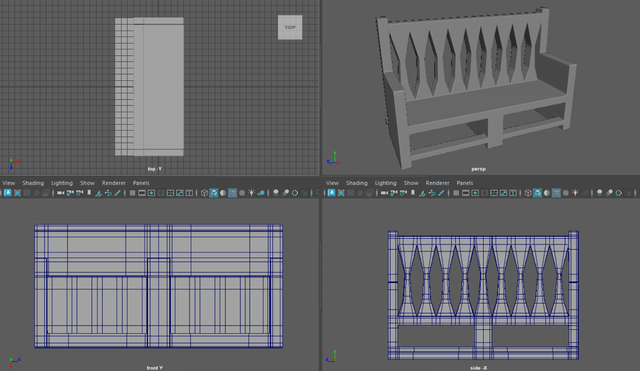
Stage 4
In Figures 8 and 9, it can be seen that 3d models are always these grey smooth shapes. To add colours and textures to the objects, they need to be UV mapped. I was the one that primarily did about 80% of the UV mapping which is basically to take each side of a 3d model and slice it up into flat planes that can be exported onto a sheet like a pdf and drawn on and the program will place the colours and textures back onto that surface when imported back in.
This step is quite tedious and time consuming due to some objects being curved surfaces like Figure 8, or having multiple surfaces like Figure 9. I would finish then send them to my group mates to draw over, then they would send it back to me and I would apply them, then hide them to save computer processing power. I quite enjoyed doing this process so I took on the role of doing most of this step.
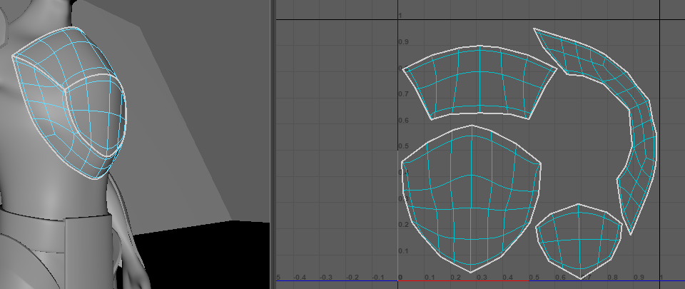
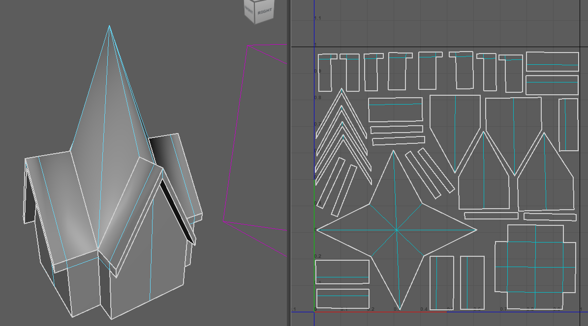
Stage 5
3d modeled characters are just a bunch of shapes morphed into the shape of a human. They don't have any structure, which is where rigging comes in. I rigged all three characters as can be seen in Figure 10 which is to position and lock a poseable skeleton inside each character so that they can be posed and used for animation.
In Figure 11, locking certain parts of the "skin" to that skeleton allows the "skin" to bend or morph in the way a human would which requires a lot of adjusting. I was also solely in charge of this part due to it being tedious especially for the fingers but I quite liked doing it shown in Figure 12.
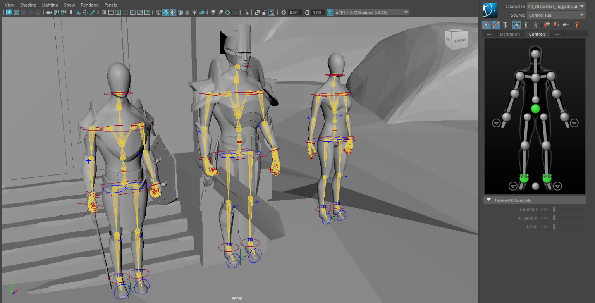
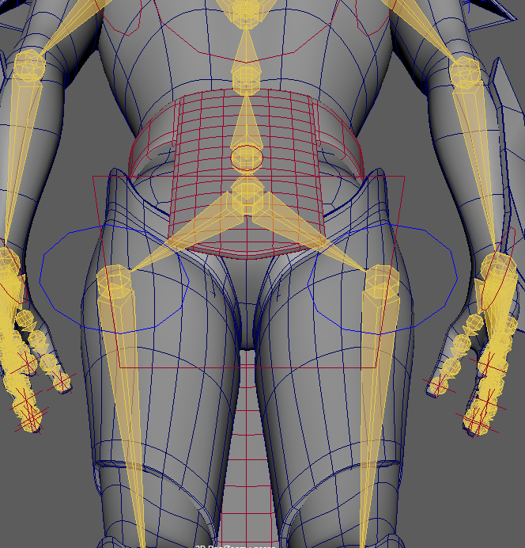
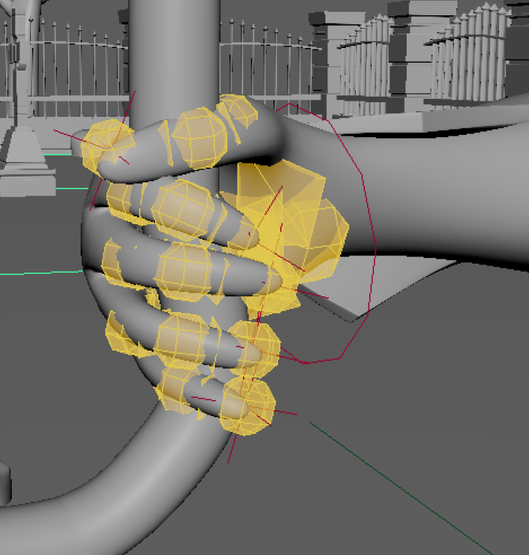
Stage 6
The most time consuming part is the animation. With all the preparation work finished, finally comes the stage to start creating the scenes that would be in the final animation. Seen in the bottom of Figure 13, each red line is a keyframe which is the exact positioning of the character with the gaps being what the computer fills in with the most efficient and fast path to get between each position.
Posing, as can be seen in Figure 14, requires a lot of rotation and manipulation of the character's position to get exactly the body movement wanted. A fact that is also looked over is that the camera that the viewer will look through also needs to be animated so that the desired angle, zoom, speed, and transition is achieved and that took a lot of planning and tweaking.
This stage alone took days of work in the school computer lab, each member on a different computer animating a different scene for 8 hours straight.
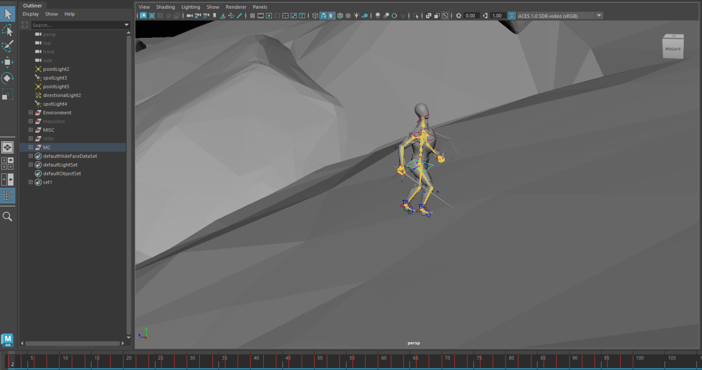
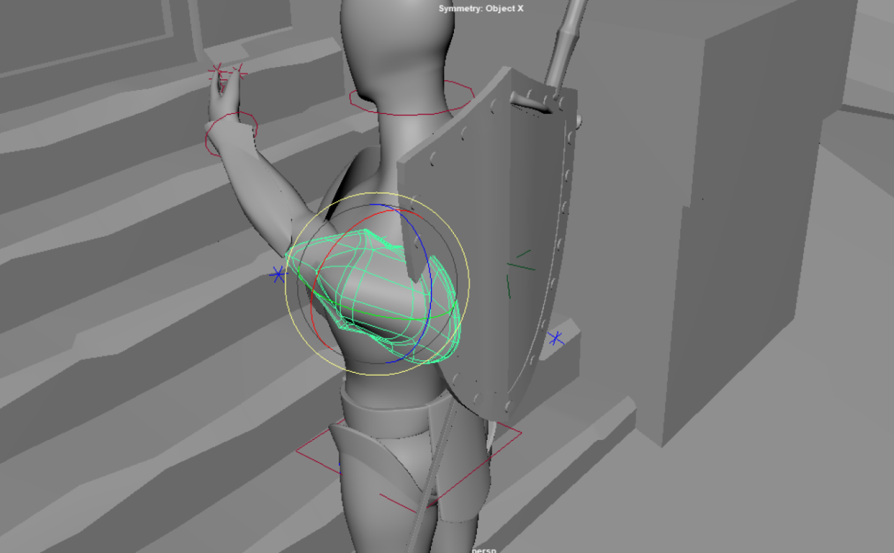
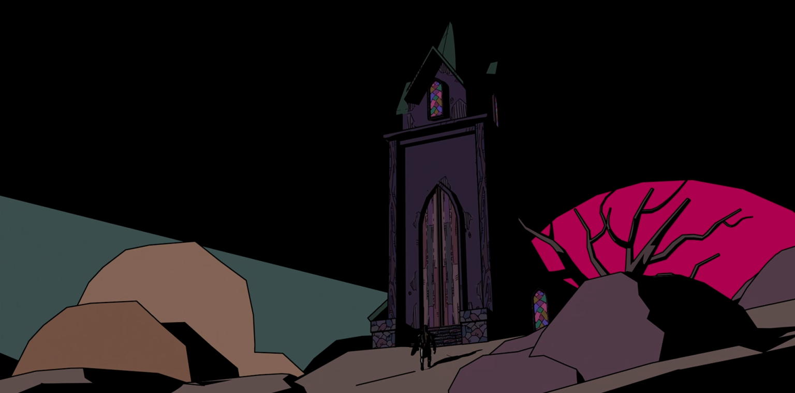
Finally to bring everything together, is the rendering stage. This stage doesn't require a lot of work on the human side, but an immense amount of work on the computer's side. Each object, character, colour, texture, lighting calculation, and animation movement now needs to be fully exported out of the program so that it can be spliced together into a full video.
My group had to borrow up to 7 computers in the school's computer lab simultaneously exporting different scenes so that it could make it in time. The animation's final runtime was about four and a half minutes long, and it took roughly 40mins for just 5 seconds of animation to export so this was a very long stage in the production but luckily this is where the team could finally relax and take a breather.